图的定义 链接到标题
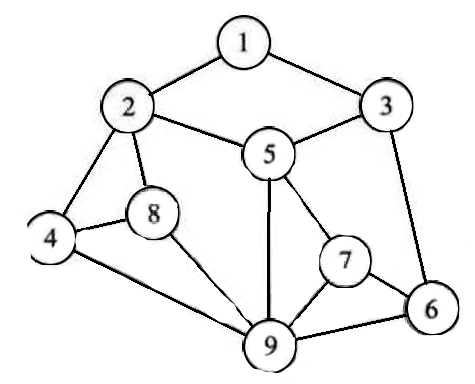
图 G 由两个集合 V 和 E 组成，记为 G=(V,E)，V 是顶点的有穷非空集合，E 是 V 中顶点偶对的有穷集合，这些顶点偶对称为边,V(G)表示图的顶点集合，E(G)表示图的边集合。
- 在线性表中，数据元素叫做元素，树中将数据元素叫结点，而图中数据元素叫做顶点。
- 线性表可以没有数据元素，称作空表，树中也可以没有结点，叫做空树，但图中不允许没有顶点。
- 线性表中，相邻数据元素之间具有线性关系，树结构中，相邻两层结点具有层次关系，图中，任何两个顶点之间都可能有关系，顶点之间的逻辑关系用边来表示，边集可以是空的。
- 有向图中，顶点对是有序的，称为从顶点 x 到顶点 y 的一条有向边，也称为弧，x 为弧尾，y 为弧头。
- 无向图中，顶点对(x,y)是无序的，称为顶点 x 与顶点 y 的一条边，没有方向。
图的基本术语 链接到标题
- 子图： 两个图 G=(V,E)，G’=(V’,E’),如果 V′⊆V 且 E′⊆E，则称 G’为 G’的子图。
- 无向完全图: 若具有 n(n-1)/2 条边(任意两个顶点之间都存在边)，则称为无向完全图。
- 有向完全图: 若具有 n(n-1)条弧(任意两个顶点之间都存在方向互为相反的两条弧)，则称为有向完全图。
- 稀疏图和稠密图: 有很少条边或弧，如
$e<nlog_2n$的图称为稀疏图，反之称为稠密图。 - 权和网: 实际应用中，每条边可以标上具有含义的数值，该数值称为该边的权，带权的图通常称为网。
- 邻接点: 对于无向图 G，如果(v,v′)∈E(v,v′)∈E,则称顶点 v 与 v’为邻接点，或者说相关联、相邻接。
- 度、入度和出度: 顶点 v 的度是指 v 相关联的边的数目，记为 TD(v)；入度是以顶点 v 为头的弧的数目，记为 ID(v)；出度是以顶点 v 为尾的弧的数目，记为 OD(v)，顶点的度=入度 + 出度，图的边数=每个顶点度之和的一半。
- 路径和路径长度: 无向图中，路径是顶点之间的一个顶点序列，有向图中，路径也是有向的；路径长度是一条路径上经过的边或弧的数目。
- 回路或环: 第一个顶点和最后一个顶点相同的路径称为回路或环。
- 简单路径、简单回路、简单环: 序列中顶点不重复出现的路径称为简单路径，除了第一个和最后一个顶点之外，其余顶点不重复出现的回路，称为简单回路。
- 连通、连通图、连通分量: 在无向图 G 中，如果两个顶点之间有路径，则两个顶点是连通的；如果图中任意两个顶点都是连通的，则称为连通图；连通分量是无向图中的极大连通子图。
- 强连通图和强连通分量: 有向图中，如果 vi 与 vj 和 vj 与 vi 之间都有路径，则称为强连通图，有向图中极大强连通子图称作强连通分量。
- 连通图的生成树: 能够构成一棵树的 n-1 条边的连通子图称为连通图的生成树;一棵 n 个结点的树有 n-1 条边，如果一个图有 n 个顶点和小于 n-1 条边，则是非连通图，如果多于 n-1 条边，则一定有环。
- 有向树和生成森林: 有一个顶点入度为 0，其余顶点入度为 1 的图，称为有向树，一个有向树的生成森林是若干棵有向树组成的。
图的类型定义 链接到标题
CreateGraph(*G,V,VR); //按照顶点集V和边弧集VR的定义构造图G。
DestroyGraph (*G); //图G存在则销毁。
LocateVex(G,u); //若图G中存在顶点u，则返回图中的位置。
GetVex(G,v); //返回图G中顶点y的值。
PutVex(G,v,value); //将图G中顶点v赋值value。
FirstAdjVex(G,*v); //返回顶点v的一个邻接顶点，若顶点在G中无邻接顶点返回空。
NextAdjVex(G,v,*w); //返回顶点v相对于顶点w的下一个邻接顶点,若w是v的最，一个邻接点则返回“空”。
InsertVex(*G,v); //在图G中增添新顶点V。
DeleteVex(*G,v); //删除图G中顶点v及其相关的弧。
InsertArc(*G,v,w); //在图G中增添弧<v,w>,若G是无向图，还需要增添对称弧<w,v>。
DeleteArc(*G,v,w); //在图G中删除弧<v,w>,若G是无向圈，则还删除对称弧<w,v>。
DFSTraverse(G); //对圈G中进行深度优先遍历，在遍历过程对每个顶点调用。
BFSTraverse(G); //对图G中进行广度优先遍历，在遍历过程对每个顶点调用。
图的存储结构 链接到标题
由于图的结构比较复杂，无法以元素在存储区的位置来表示关系，所以图没有顺序存储结构 ，可以借助二维数组来表示元素间的关系，即邻接矩阵表示法，图的链式存储结构有邻接表，十字链表，邻接多重表等。
邻接矩阵 链接到标题
图的邻接矩阵存储方式是用两个数组来表示图，一个一维数组存储图中顶点信息，一个二维数组(称为邻接矩阵)存储图中的边或弧的信息。
设 G(V,E)是具有 n 个顶点的图，则 G 的邻接矩阵是具有如下性质的 n 阶方阵。
$$ arc[i][j] = \begin{cases} 1 & \text{若} < v_i, v_j > \text{或} (v_i, v_j) \in E \\ 0 & \text{反之} \end{cases} $$
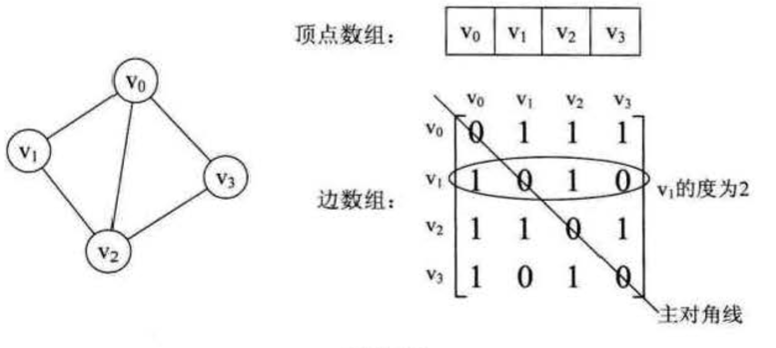
如上图，顶点数组为 vertex[4]={v0,v1,v2,v3}，边数组是一个二维数组，如果两个元素之间有边，则对于二维数组的值为 1，如果无边则为 0，对于 arc[i]i 的元素来说，由于不存在自身到自身的边，所以对于元素均为 0，因此无向图的边数组是一个对称矩阵。
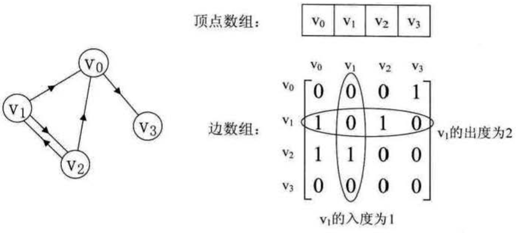
上图是一个有向图，顶点数组为 vertex[4]={v0,v1,v2,v3}vertex[4]={v0,v1,v2,v3}，弧数组是一个矩阵，主对角线上的数值依然为 0.
因为有向图的边与边不同，所以两个顶点之间可能存在两条边，因此有向图的邻接矩阵并不对称，有向图讲究入度和出度，入度与出度之和为该顶点的度，如果 G(V,E)是一个网，并且顶点到顶点之间有路径，弧的对应值应该存放路径上的权值，如果顶点到顶点之间无路径，则可以使用无穷大表示。
图的存储结构代码表示 链接到标题
typedef char VertexType; //顶点类型
typedef int EdgeType; //边上的权值
#define MAXVEX 100 //最大顶点数
#define INFINITY 65535 //代表无穷大
typedef struct {
VertexType vexs[MAXVEX]; //顶点表
EdgeType arc[MAXVEX][MAXVEX]; //邻接矩阵
int numVertexes, numEdges; //图中当前节点数和边数
}MGraph;
void CreateMgraph(MGraph *G) {
int i, j, k, w;
cout << "输入顶点数和边数" << endl;
cin >> G->numVertexes >> G->numEdges;
for (i = 0; i < G->numVertexes; i++) {
cin >> G->vexs[i];
}
for (i = 0; i < G->numVertexes; i++) { //初始化
for (j = 0; j < G->numVertexes; j++) {
G->arc[i][j] = INFINITY;
}
}
for (k = 0; k < G->numEdges; i++) {
cout << "请输入边(vi,vj)上的i、j和权值" << endl;
cin >> i >> j >> w;
G->arc[i][j] = w;
G->arc[j][i] = G->arc[i][j]; //矩阵对称
}
}
邻接矩阵的优缺点 链接到标题
-
优点
- 便于判断两个顶点之间是否有边
- 便于计算各顶点的度
-
缺点
- 不便于增加和删除顶点
- 不便于统计边的数目，因为时间复杂度为
$O(n^2)$ - 时间复杂度较高，并且浪费空间。
邻接表 链接到标题
邻接表是图的一种链式存储结构，在邻接表中每个顶点之间建立一个单链表，每个单链表的第一个结点存放有关顶点的信息，使用数组加链表的结合存储方式称为邻接表。
邻接表的处理方法如下：
- 图中顶点用一个一维数组存储，也可以用单链表存储，每个数据元素还需要存储指向第一个邻接点的指针，以便于查找该顶点的边信息。
- 图中每个顶点的所有邻接点构成一个线性表，由于临界点个数不定，所以采用单链表方式存储，下图是一个无向图的邻接表结构。
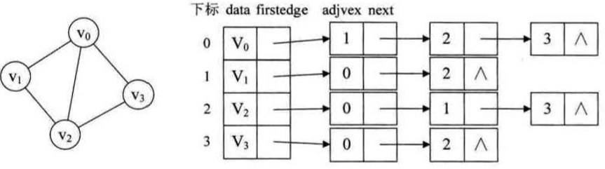
图中定点表的各个结点由 data 和 firstedge 两个域表示，data 是数据域，存储顶点信息，firstedge 是指针域，指向边表的第一个结点，即此顶点的第一个邻接点，边表结点由 adjvex 和 next 组成，adjvex 是邻接点域，存储某顶点的邻接点在顶点表中的下标，next 则存储指向边表中下一个结点的指针。 对于有向图，邻接表的结构也是类似的，但由于有向图区别方向，所以将顶点为弧尾来存储边表，并且还需要一个有向图的逆邻接表存储，邻接表负责存储入度的结点，逆邻接表负责存储出度的结点。
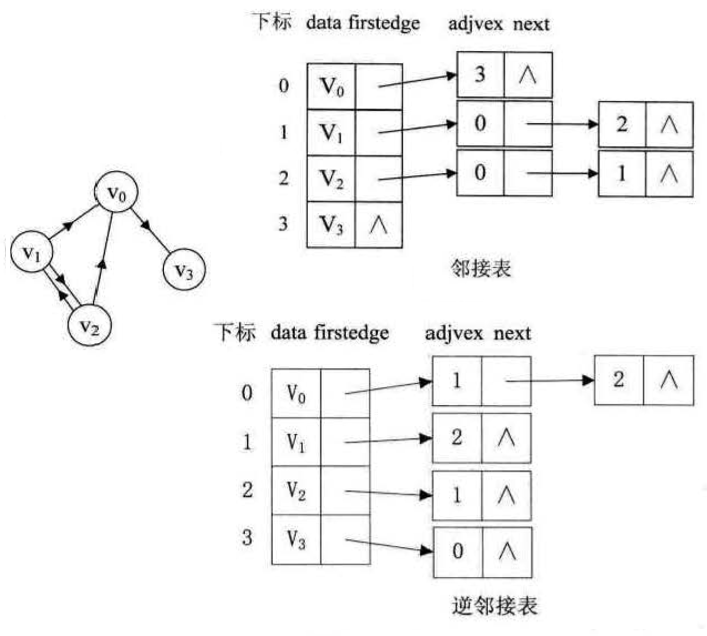
对于带权值的网图，可以在边表结点定义中再增加一个 weight 的数据域，存储权值信息，如下图所示：
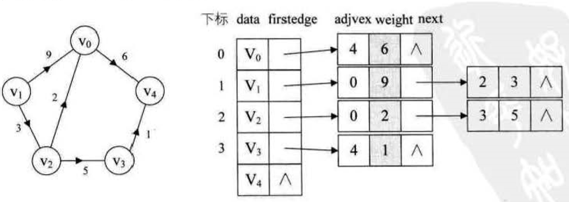
无向图邻接表代码示例 链接到标题
#define MAXVEX 30
typedef char VertexType; //顶点类型
typedef int EdgeType; //权值类型
typedef struct EdgeNode { //边表结点
int adjvex; //存储该顶点对应下标
EdgeType weight; //权值
struct EdgeNode *next;
}EdgeNode;
typedef struct VertexNode { //顶点表结点
VertexType data; //顶点域
EdgeNode *firstedge; //边表头指针
}VertexNode,AdjList[MAXVEX];
typedef struct {
AdjList adjList;
int numVertexes, numEdges; //图中当前顶点数和边数
}GraphAdjList;
void CreateALGraph(GraphAdjList *G) {
int i, j, k;
EdgeNode *e;
cout << "输入顶点数和边数" << endl;
cin >> G->numVertexes >> G->numEdges;
for (i = 0; i < G->numVertexes; i++) { //建立顶点表
cin >> G->adjList[i].data;
G->adjList[i].firstedge = NULL;
}
for (k = 0; k < G->numEdges; k++) { //头插法
cout << "输入边(vi,vj)上的顶点序号" << endl;
cin >> i >> j;
e = (EdgeNode*)malloc(sizeof(EdgeNode));
e->adjvex = j;
e->next = G->adjList[i].firstedge; //e指向当前顶点指向的结点
G->adjList[i].firstedge = e;
//由于是无向图，因此顶点i与顶点j相互指向
e = (EdgeNode*)malloc(sizeof(EdgeNode));
e->adjvex = i;
e->next = G->adjList[j].firstedge;
G->adjList[j].firstedge = e;
}
}
该算法时间复杂度为 O(n+e)，建立有向图邻接表与此类似，在生成图时，只需要对应申请一个结点空间便可，网图可将权值存储在 weight 中。
邻接表表示法的优缺点 链接到标题
-
优点
- 便于增加和删除顶点
- 便于统计边的数目
- 空间效率高
-
缺点
- 不便于判断顶点之间是否有边
- 不便于计算有向图各顶点的度
十字链表 链接到标题
十字链表是有向图的另一种链式存储方式，可以看作是有向图的邻接表和逆邻接表的结合，目的是为了便于求得图中顶点的度，十字链表存储结构中，有向图的顶点结构如下图所示：
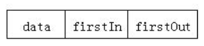
其中 data 表示顶点的数据，firstIn 表示指向以该顶点为弧头的第一个弧结点，firstOut 表示指向以该顶点为弧尾的第一个弧结点，为了表示有向图中所有的顶点，采用一个顶点数组存储每一个结点，弧结点定义如下：
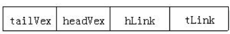
其中 tailvex 表示弧起点在顶点表的下标，headvex 是指弧终点在顶点表中的下标，headlink 是指入边表指针域，指向终点相同的下一条边，taillink 是指边表指针域，指向起点相同的下一条边，如果是网，还可以再增加一个 weight 域来存放权值，十字链表结构如下图所示：
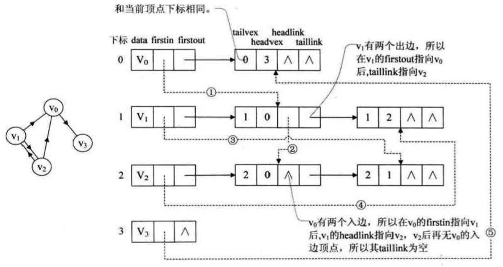
十字链表存储结构代码示例 链接到标题
#define MAX_VERTEX_NUM 20
typedef int infoType;
typedef char vertexTpe;
typedef struct ArcBox{ //弧结点
int tailvex,headvex; //该弧的尾和头顶点的位置
struct ArcBox *hlink,*tlink; //分别为弧头和弧尾相同的弧的链域
InfoType *info; //该弧相关信息的指针
}ArcBox;
typedef struct VexNode{ //顶点结构
VertexType data;
ArcBox *firstin,*firstout; //指向该顶点的入弧和出弧
}VexNode;
typedef struct{
VexNode xlist[MAX_VERTEX_NUM]; //表头向量
int vexnum,arcnum; //有向图的当前顶点数和弧数
}OLGraph;
十字链表简易代码示例 链接到标题
#define MAX_VERTEX_NUM 20
typedef int InfoType;
typedef char VertexType;
typedef struct ArcBox { //弧结点
int tailvex, headvex; //该弧的尾和头顶点的位置
struct ArcBox *hlink, *tlink; //分别为弧头和弧尾相同的弧的链域
InfoType *info; //该弧相关信息的指针
}ArcBox;
typedef struct VexNode { //顶点结构
VertexType data;
ArcBox *firstin, *firstout; //指向该顶点的入弧和出弧
}VexNode;
typedef struct {
VexNode xlist[MAX_VERTEX_NUM]; //表头向量
int vexnum, arcnum; //有向图的当前顶点数和弧数
}OLGraph;
int locateVertex(OLGraph &G, char c) { //寻找顶点的下标
int index = -1;
for (int i = 0; i < G.vexnum; i++) {
if (c == G.xlist[i].data) {
index = i; break;
}
} return index;
}
void CreateOLGraph(OLGraph &g) {
g.arcnum = 0;
cout << "请输入有向图的当前顶点数" << endl;
cin >> g.vexnum;
for (int i = 0; i < g.vexnum; i++) { //输入顶点数据
cout << "请输入第" << i << "个顶点" << endl;
cin >> g.xlist[i].data;
g.xlist[i].firstin = NULL;
g.xlist[i].firstout = NULL;
}
}
void AddArcBox(OLGraph &g,int t,int h) { //插入弧(头插法)
ArcBox *arb = (ArcBox*)malloc(sizeof(ArcBox));
arb->headvex = h;
arb->tailvex = t;
arb->info = NULL;
ArcBox *ptail = g.xlist[t].firstout;
ArcBox *phead = g.xlist[h].firstin;
if (!ptail) { arb->tlink = NULL; }
else { arb->tlink = ptail; }
if (!phead) { arb->hlink = NULL; }
else { arb->hlink = phead; }
g.xlist[t].firstout = arb;
g.xlist[h].firstin = arb;
g.arcnum++;
}
void InsertNode(OLGraph &g) { //插入顶点
cin >> g.xlist[g.vexnum].data;
g.xlist[g.vexnum].firstin = NULL;
g.xlist[g.vexnum].firstout = NULL;
g.vexnum++;
}
int GetDepth(OLGraph g,int i) { //得到顶点的度
int num = 0;
ArcBox* v = g.xlist[i].firstin;
while (v) {
v = v->hlink;
num++;
}
v = g.xlist[i].firstout;
while (v) {
v = v->tlink;
num++;
}
return num;
}
int printDG(OLGraph &g) { //打印
for (int i = 0; i < g.vexnum; i++) {
ArcBox *ptail = g.xlist[i].firstout;
ArcBox *phead = g.xlist[i].firstin;
cout<<"以顶点"<<i<<"为弧尾的链域 "<<g.xlist[i].data;
while(ptail){
cout<<"-->"<<"|"<<ptail->tailvex<<"|"<<ptail->headvex << "|";
ptail = ptail-> tlink;
}
cout<<"-->NULL"<<endl;
cout<<"以顶点"<<i<<"为弧头的链域 "<<g.xlist[i].data;
while(phead){
cout<<"-->"<<"|"<<phead->tailvex<<"|"<<phead->headvex << "|";
phead = phead->hlink;
}
cout<<"-->NULL"<<endl;
}
return 1;
}
//测试
int main() {
OLGraph g;
CreateOLGraph(g);
AddArcBox(g, 0, 2);
AddArcBox(g, 2, 3);
AddArcBox(g, 0, 3);
printDG(g);
getchar();
getchar();
return 0;
}
邻接多重表 链接到标题
邻接多重表是无向图的另一种链式存储方式，使用邻接表更容易对其顶点进行操作，如果对于边操作就比较麻烦，因此有了邻接多重表的结构，重新定义的边表节点结构如下图：
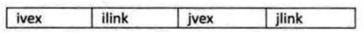
其中 ivex 和 jvex 是与某条边依附的两个顶点在顶点表中下标，ilink 指向依附顶点 ivex 的下一条边，jlink 指向依附顶点 jvex 的下一条边，这既是邻接多重表结构。
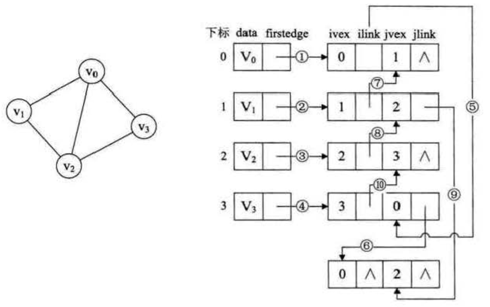
邻接多重表与邻接表的差别在于同一条边在邻接表中用两个结点表示，而在邻接多重表中只有一个结点，如果要删除某边，只需要将两个链域指向空即可。
邻接多重表存储代码示例 链接到标题
#define MAX_VERTEX_NUM 20
typedef enum{unvisited,visited} VisitIf;
typedef struct EBox{
VisitIf mark; //访问标记
int ivex,jvex; //该边依附的两个顶点的位置
struct EBox *ilink,*jlink; //分别指向依附这两个顶点的下一条边
InfoType *info; //该边信息指针
}Ebox;
typedef struct VexBox{
VertexType data;
EBox *firstedge; //指向第一条依附该顶点的边
}VexBox;
typedef struct{
VexBox adjmulist[MAX_VERTEX_NUM];
int vexnum,edgenum; //无向图的当前顶点数和边数
}AMLGraph;
邻接多重表简易代码示例 链接到标题
#define MAX_VERTEX_NUM 20 //最大顶点数
typedef int InfoType;
typedef char VertexType;
typedef enum { unvisited, visited } VisitIf;
typedef struct EBox {
VisitIf mark; //访问标记
int ivex, jvex; //该边依附的两个顶点的位置
struct EBox *ilink, *jlink; //分别指向依附这两个顶点的下一条边
InfoType *info; //该边信息指针
}Ebox;
typedef struct VexBox {
VertexType data;
EBox *firstedge; //指向第一条依附该顶点的边
}VexBox;
typedef struct {
VexBox adjmulist[MAX_VERTEX_NUM];
int vexnum, edgenum; //无向图的当前顶点数和边数
}AMLGraph;
void CreateAML(AMLGraph &g) {
cout << "请输入无向图的顶点数" << endl;
cin >> g.vexnum;
for (int i = 0; i < g.vexnum; i++) {
cout << "请输入第" << i << "个顶点的数据" << endl;
cin >> g.adjmulist[i].data;
g.adjmulist[i].firstedge = NULL;
}
}
void InsertEBox(AMLGraph &g,int i,int j) {
//边结点初始化
Ebox *b = (Ebox*)malloc(sizeof(Ebox));
b->info = NULL;
b->ivex = i;
b->jvex = j;
b->mark = unvisited;
b->ilink = NULL;
b->jlink = NULL;
//找到这个边相邻的第一个顶点
if (g.adjmulist[i].firstedge == NULL) { //如果第一个顶点边域为空，则第一个顶点的边域指向该边。
g.adjmulist[i].firstedge = b;
}
else { //否则找到该顶点的最后一个邻边
Ebox *temp = g.adjmulist[i].firstedge;
while (temp->ilink) {
temp = temp->ilink;
}
if (b->ivex == temp->ivex)
temp->ilink = b;
if (b->ivex == temp->jvex)
temp->jlink = b;
}
//找到这个边相邻的第二个顶点
if (g.adjmulist[j].firstedge == NULL) {
g.adjmulist[j].firstedge = b;
}
else {
Ebox *temp = g.adjmulist[j].firstedge;
while (temp->jlink) {
temp = temp->jlink;
}
if (b->jvex == temp->jvex)
temp->jlink = b;
if (b->jvex == temp->ivex)
temp->ilink = b;
}
g.edgenum++;
}
void AMLPrint(AMLGraph g) {
cout << "顶点如下" << endl;
for (int i = 0; i < g.vexnum; i++) {
cout << g.adjmulist[i].data << " ";
}
cout << endl << "边集如下" << endl;
for (int i = 0; i < g.vexnum; i++) {
Ebox *temp = g.adjmulist[i].firstedge;
while (temp){
if (i == temp->ivex) {
if (!temp->mark) {
cout << "(" << temp->ivex << "," << temp->jvex << ")" << " ";
temp->mark = visited;
}
temp = temp->ilink;
}
else{
if (!temp->mark) {
cout << "(" << temp->ivex << "," << temp->jvex << ")" << " ";
temp->mark = visited;
}
temp = temp->jlink;
}
}
}
cout << endl;
}
//测试
int main() {
AMLGraph g;
CreateAML(g);
InsertEBox(g, 0, 1);
InsertEBox(g, 0, 3);
InsertEBox(g, 0, 4);
InsertEBox(g, 1, 3);
InsertEBox(g, 2, 4);
InsertEBox(g, 0, 2);
AMLPrint(g);
system("pause");
return 0;
}
边集数组 链接到标题
边集数组由两个一维数组构成，一个存储顶点的信息，另一个存储边的信息，这个边数组每个数据元素由一条边的起点下标、终点下标和权组成，边集数组关注的是边的集合，但在边集数组中查找一个顶点的度需要扫描整个边数组，效率较低，这里不详细叙述，在克鲁斯卡尔算法中在进行介绍。
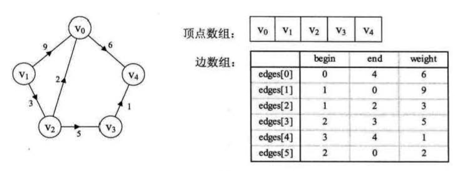
小结 链接到标题
-
无向图
- 邻接矩阵，无向图的邻接矩阵较多为稀疏矩阵，浪费空间且时间复杂度高
- 邻接表，采用链式存储，便于顶点的操作，且节省空间，时间复杂度较低
- 邻接多重表，解决了邻接表操作图的边困难的问题，主要针对边进行操作。
-
有向图
- 邻接表，便于查找图顶点的入度
- 逆邻接表，便于查找图顶点的出度
- 十字链表，结合了邻接表与逆邻接表，便于计算顶点的度